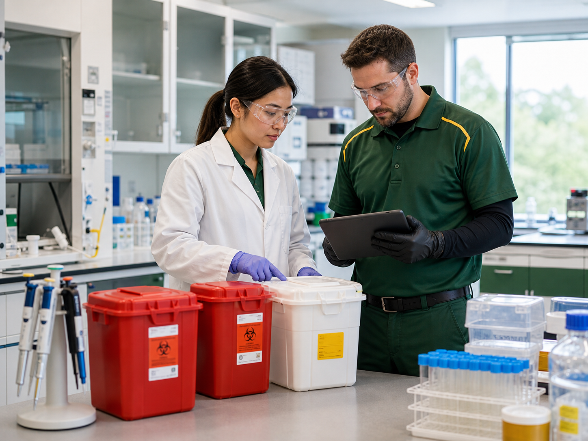

Industry
Labs Medical Waste Disposal
Laboratories need careful segregation, labeling, pickup planning, and records for regulated waste created during testing or research.
Service Review
Plan medical waste service for labs
Share the basics and the team will help review pickup, containers, records, training, and waste stream needs.
Quick contact
Waste support for labs
Laboratories may generate sharps, specimen-related waste, culture materials, contaminated disposables, pharmaceutical waste, and other regulated streams depending on the work performed.
United Medical Waste can help review waste streams, container placement, labeling practices, pickup frequency, and documentation needs.
Lab managers remain responsible for classifying materials, separating incompatible waste, meeting biosafety requirements, and following institutional protocols.
Review your labs waste program
Get help matching service to your facility's actual waste stream and compliance records.
Get a Quote